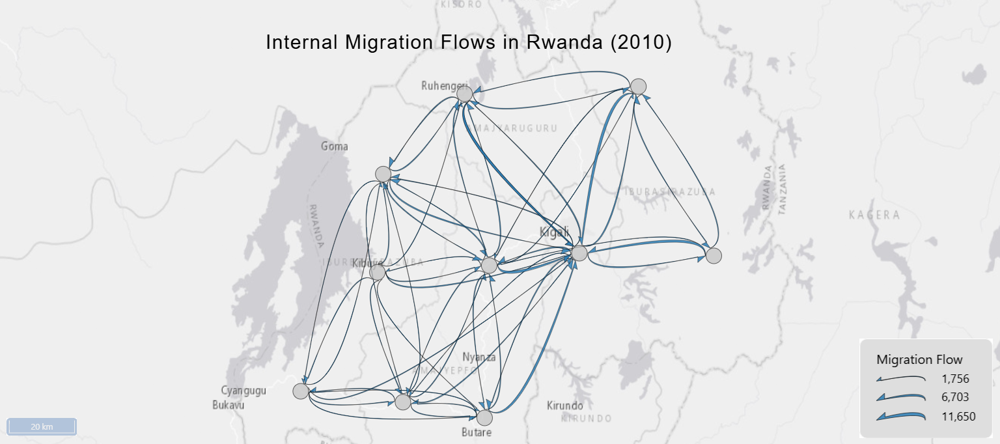

This page presents my flow mapping assignment created with FlowMapper. The map shows internal migration flows between administrative units in Rwanda in 2010.

Download FlowMapper Project File
From my map, I can clearly see that Kigali acts as the main hub of migration. Kigali both receives and sends the largest flows, which is shown by the thickest lines connected to it.
Several strong flows connect Kigali to surrounding regions such as Ruhengeri, Gisenyi, Kibuye, Cyangugu, and Butare. This shows that Kigali is highly connected to multiple parts of the country.
The flows show a clear pattern of movement between Kigali and both the northern and southern parts of Rwanda. Many of the strongest flows connect the center to northern places such as Ruhengeri and Gisenyi, and southern places such as Butare and Cyangugu.
The flows are also bidirectional, meaning people move both toward Kigali and away from it rather than in only one direction.
The node symbols show the locations of each administrative unit, but the importance of each location is mainly shown by the number and thickness of flows connected to it. Kigali stands out because it has many thick flows connected to several regions.
I did not include a choropleth map because the dataset does not contain a suitable area-based variable such as population or income. Instead, I used a neutral basemap with place names to provide geographic context without distracting from the flow lines.
This pattern suggests that Kigali likely has more economic opportunities, services, and infrastructure than many surrounding areas. These factors may attract people from other regions. At the same time, people may also move out of Kigali to nearby areas, creating strong two-way movement.